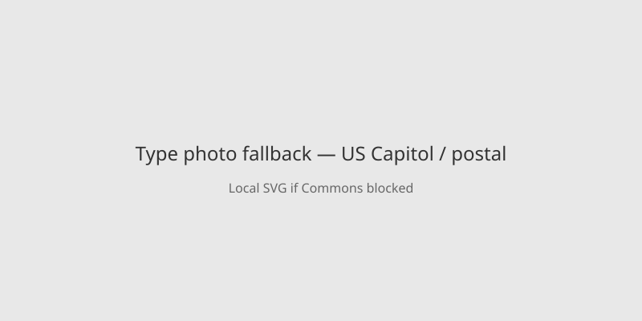

United States · election security · 15 October 2026
FBI and Postal Inspection Service are investigating suspicious letters sent to congressional and election offices.

What is agreed across desks
On 15 October the FBI and the US Postal Inspection Service stated they were investigating “suspicious mailings” sent to state election offices and congressional offices. Some letters contained an unknown white powder or other substance. At least five Democratic Senate offices were targeted; many letters were intercepted before delivery. Officials described the items as potentially hazardous and urged caution. The timing is roughly three weeks before the 3 November midterm elections. Similar incidents occurred in 2023 with fentanyl-laced envelopes to election offices. Reuters, BBC and CBS report matching core facts; no confirmed injuries or confirmed toxic agent appear in the initial official statements.
What is only a quote
Statements from individual senators calling the mailings a “stark reminder” of danger are political characterizations. Claims about the precise number of letters beyond “at least five” Senate offices remain provisional.
Mechanism a reader needs
Mail screening for powder or chemical threats follows protocols developed after the 2001 anthrax letters. Interception by postal inspectors or Senate security reduces exposure. Lab analysis determines whether a substance is hazardous; early public statements usually say “unknown” until results return. Election-office mail is routine in the weeks before ballots are counted; an added threat stream increases operational load. The photograph is a type exterior of the Capitol complex.
What this story is not
It is not a finding that any letter contained a lethal agent. It is not an attribution of the sender. It is not a prediction about Election Day disruption.

Source articles and scores
Hero: Commons type photo of Capitol. Special:FilePath. Caption states type. onerror to SVG. No crossorigin.